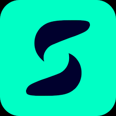

Mission in one line
Contribute across one product: prove whether biomass images can estimate C-phycocyanin for a future optical sensor, make the EERA assistant reliable and product-integrated, and evolve the Flutter app toward release quality.

Two-month engineering internship on SPIRAW — a connected photobioreactor ecosystem for home spirulina cultivation — spanning applied AI research, conversational-AI engineering, and production mobile development. Role: Engineering Intern (AI / Conversational AI / Mobile), 1st-year cycle ingénieur.
Contribute across one product: prove whether biomass images can estimate C-phycocyanin for a future optical sensor, make the EERA assistant reliable and product-integrated, and evolve the Flutter app toward release quality.
Python · PyTorch · scikit-learn · CatBoost · OpenCV · Flutter · Dart · Spring Boot · Django · REST · MQTT · Stripe
SPIRAW lets people grow fresh spirulina at home: an IoT machine, a central backend, a mobile app, and EERA — an AI conversational assistant. The internship was not a single isolated project but an engineering contribution across several components of the same live product, each with real users and release constraints.
On every axis the emphasis was on trustworthy methodology: leak-free validation, explainability, traceability, and guardrails — the same discipline that makes academic results credible and production systems safe. Negative results were documented and acted on rather than hidden.
23,040 lab images audited (116 duplicates removed), 24 color descriptors, group-aware splits + leave-one-batch-out. CatBoost reference vs MobileNetV2 CNN; fusion rejected on complexity-without-gain grounds.
EERA Tech vs EERA Recipes split; normalization → guards → keyword/regex → fuzzy → LLM routing; absent data never invented; backend-kept context; JWT bridging; turn-level logging with admin REST.
Real backend data on machine screens; machine-ID fixes; mobile↔MQTT removed in favor of authenticated backend; Stripe shop, geolocated addresses, multi-currency; community and messaging rebuild.
Explainability (SHAP, Grad-CAM), optical stress tests with 112×112 px rejection rule, release preparation, and honest limit documentation throughout.
Dataset reconstruction, inventory audit, EDA, and leak-free evaluation protocol for the vision study.
Tabular baselines, CNN training, error analysis, robustness and explainability work, Flask demonstrator.
EERA domain split, intent pipeline, guardrails, context handling, and conversation-intelligence logging.
Mobile hardening: backend wiring, secure comms migration, e-shop, community, accounts, and release prep.
An experimentally credible feasibility study (not an industrial deployment) with honest limits, a measurably more reliable assistant, and a materially more secure and complete mobile app — all integrated into the same product.
Working on a real product teaches what academic projects don't: messy data, existing systems, and value coming as much from methodology — leak-free validation, explainability, traceability, guardrails — as from code. This internship grew me across AI research, conversational-AI engineering, and production mobile development.